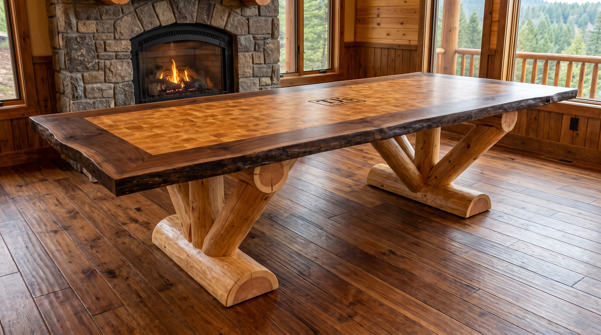
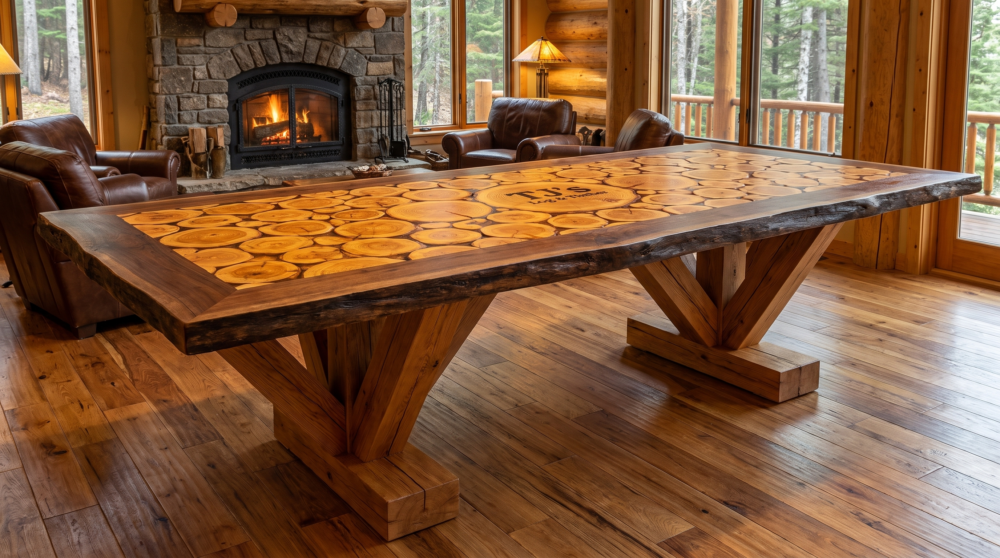

TJ's live-edge table
11'-0" × 5'-0". 16" live-edge both sides. Cookie field. Two bases across the 5'. Three members each: left, king, right, on a sled.

Round-log bases — peeled 10–12" logs, same three-member fan.

Square-log bases — boxed 10–12" timbers, same three-member fan.

Center field reference (wall):